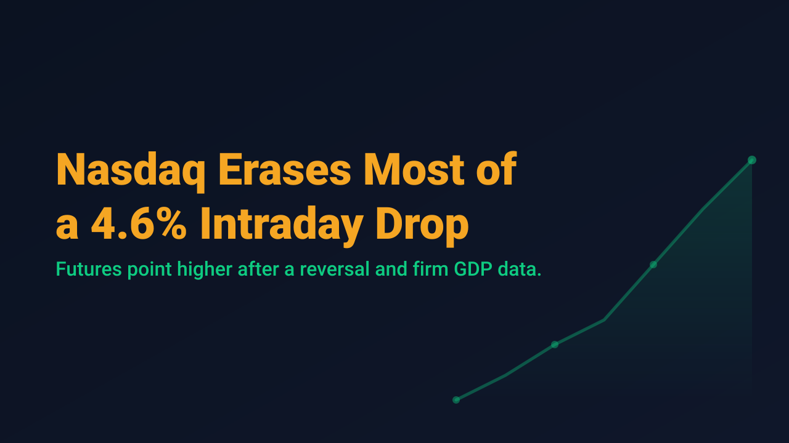
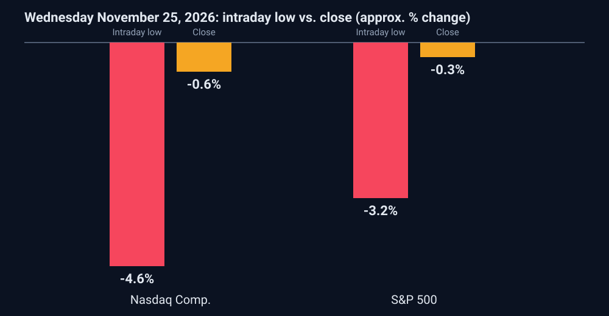

Nasdaq Erases Most of a 4.6% Intraday Drop

The Nasdaq Composite closed Wednesday at 23,585.80, down 147.73 points or 0.6%, after trading about 4.6% lower at its intraday low, according to Zacks via Yahoo Finance. The S&P 500 closed at 7,182.78, down 0.3%, having been down about 3.2% at its worst, while the Dow Jones Industrial Average gained 164.25 points, or 0.3%, to 50,182.95, with 19 of its 30 components higher. The VIX closed at 27.17, down 4%. Wednesday was the last full session before Thursday's Thanksgiving closure.
Zacks ties the early weakness in chip and AI names to proposed tariffs on 14 countries at rates of 15% to 20%. Nvidia fell 4%, Micron 4.5% and Oracle 5.1%, while the materials sector rose 2.1% and the technology sector fell 0.8%. Volume was 18.12 billion shares against a 20-session average of 22 billion. A holiday-thinned tape can exaggerate both a sell-off and the recovery that follows, though that is an interpretation, not something the data proves.

The economic data supported the recovery. Zacks reports that the second estimate of third-quarter GDP came in at 4.3% annualized, against a first estimate of 3.4% and a 3.6% consensus. October PCE prices rose 0.3% on the month, in line with expectations, and 3.8% from a year earlier, with core PCE at 3.3% year over year. Initial jobless claims were 189,000 against a 202,000 consensus, and personal income rose 0.7% against an expected 0.4%. Stronger growth alongside inflation that remains well above target is a combination that keeps rate expectations firm; Analytics Insight reports that traders price a 99% probability of a Fed hike at the December 8 to 9 meeting.
Friday's setup is more positive, but it is not a result. As of 8:58 a.m. ET, Yahoo Finance reported Dow futures up 1.3%, S&P 500 futures up 1.6% and Nasdaq-100 futures up 2.2% ahead of the shortened Black Friday session. Futures are indications, and this post was written before Friday's close. For a swing trader, the lesson of Wednesday is that a close near the prior day's level can conceal an intraday range wide enough to trigger stops on either side.
A day that opens with panic and closes nearly flat rewards traders who defined their risk in advance. The next sessions will test whether the rebound reflects a real change in conditions or simply the quiet of a holiday week.